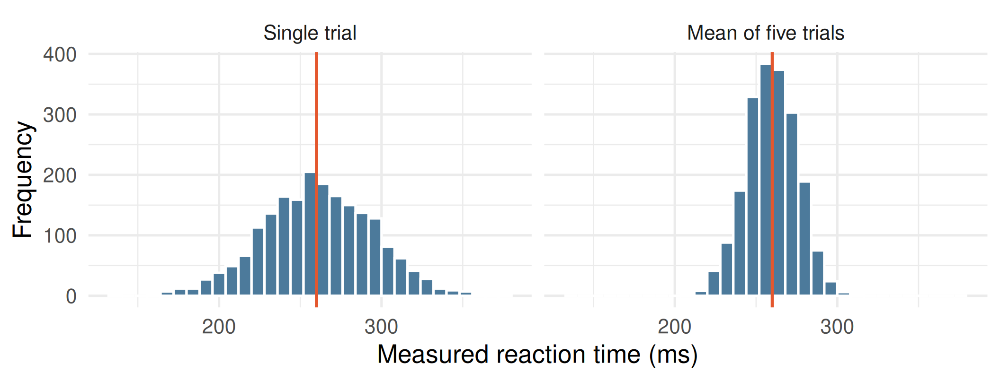
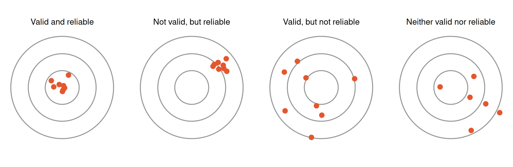
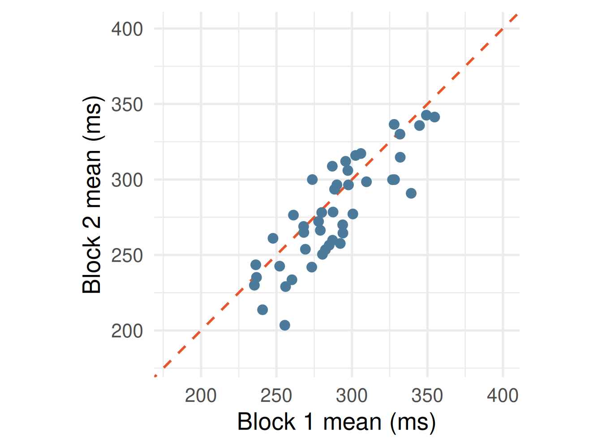
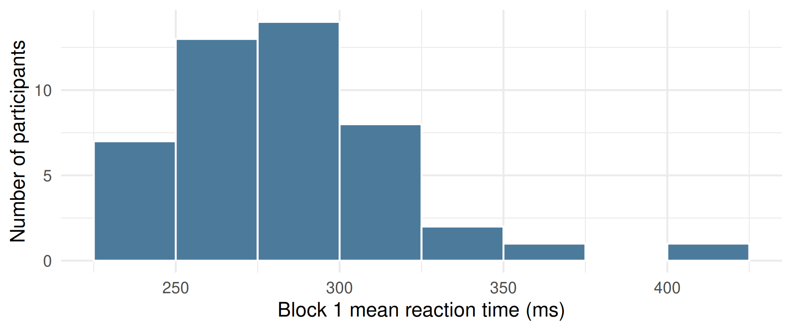
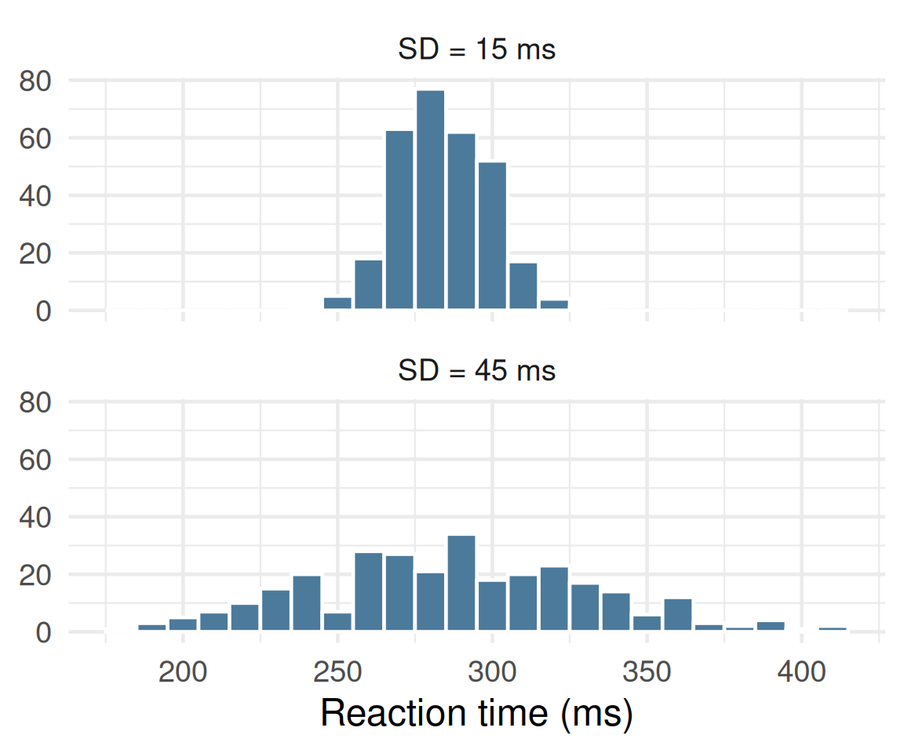
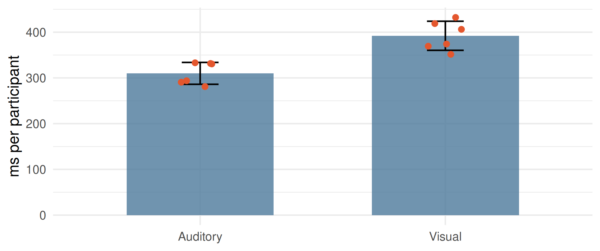
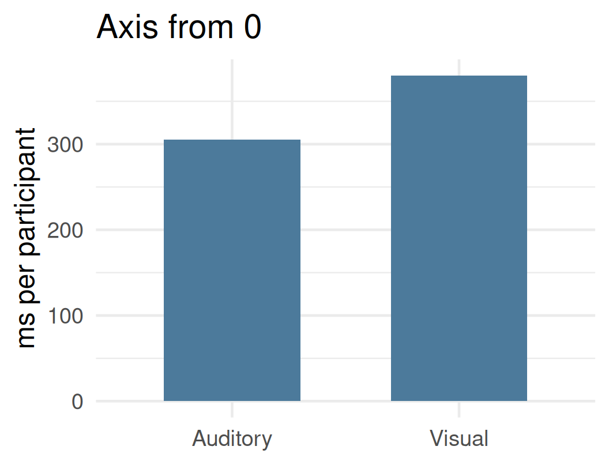
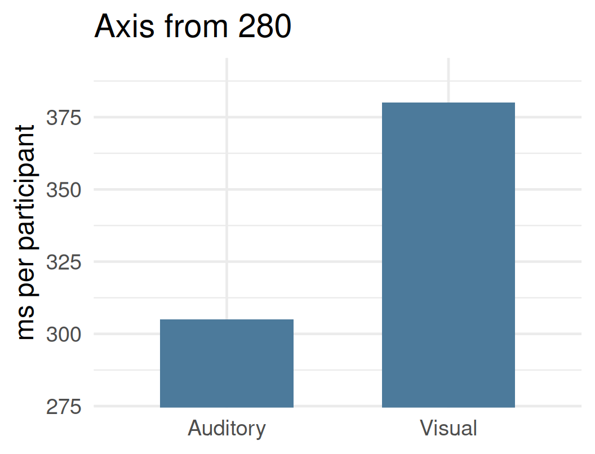
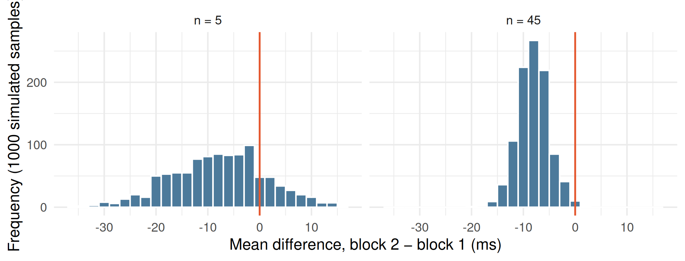

Foundations of data and measurement in neuroscience
Get these slides:
asd
Lecturer in Computational Psychophysiology
School of Sport Science, Bangor University, UK
On a computer press F11 to de/activate full-screen view.
For smartphone view and for pdf document: use “learning resources” link above.
Measurement and measurement error
Describing a distribution
Presenting data accurately
Review
Week 1: simple reaction time
Each participant completed two blocks of five trials on a personal device.
Trials were averaged, yielding one observation per participant per block.
Week 2: chain reaction time
A signal was transmitted along a row of participants, in an auditory and a visual condition, and timed manually.
One observation per chain per trial.
This session considers how such data should be interpreted, summarised and presented.
A value reported without its unit and conditions cannot be interpreted. “280” is uninformative; “280 ms, first block, smartphone” is a measurement.
In classical measurement theory, every observed score is the sum of two components:
In the Week 1 task, the true score is the speed with which a participant’s nervous system responds to a visual stimulus.
Sources of error in the class data:
Random error (aka, noise)
Varies unpredictably in magnitude and direction from one observation to the next.
Reduced by averaging across observations.
Systematic error (aka, bias)
Displaces observations consistently in one direction.
Not reduced by averaging; requires a change in the measurement procedure.

Simulated data: one participant with a true reaction time of 260 ms (red line), measured 2000 times.
The mean of several trials is a more precise estimate of the true score than any single trial, because random errors partially cancel.
The fastest trial is the observation in which random error happened to favour the participant most.
The mean of all trials allows positive and negative errors to offset one another.
For describing a participant’s typical performance, the mean (or median) of all trials is preferred to the single best trial.


Simulated data. Points on the dashed line indicate identical scores in both blocks; the closer the points lie to the line, the higher the test–retest reliability.
Simple visual reaction time measured with laboratory equipment is typically in the region of 200–250 ms.
The class means, obtained on personal devices, were slightly higher.
The Week 1 score is a valid measure of performance on a particular device; it is a less valid measure of nervous-system processing speed.

Mean: the sum of all observations divided by their number.
Median: the middle value when observations are ranked in order.
In a symmetric distribution the two coincide.
Five observations: 240, 260, 270, 280, 300 ms
One extreme observation: 240, 260, 270, 280, 900 ms
The mean is sensitive to extreme values; the median is robust to them.
Range: the difference between the largest and smallest observations.
Determined entirely by the two most extreme observations.
Standard deviation (SD): approximately, the typical distance of an observation from the mean.
Determined by every observation.

Two distributions with the same mean may differ substantially in dispersion. A measure of central tendency should therefore be reported together with a measure of dispersion.
Participants differ considerably from one another (between-participant variability).
To assess the effect of a change in conditions, each participant can be compared with themselves.
| Participant | Block 1 | Block 2 | Difference (2 − 1) |
|---|---|---|---|
| A | 312 | 298 | −14 |
| B | 251 | 249 | −2 |
| C | 290 | 301 | +11 |
A negative difference indicates a faster response in block 2. The mean difference estimates the average change, with stable differences between participants removed.
| Week | Conditions compared within each participant | Difference score |
|---|---|---|
| 2 | auditory vs visual signal | visual − auditory |
| 5 | valid vs invalid spatial cue | invalid − valid |
| 7 | congruent vs incongruent Stroop trials | incongruent − congruent |
| 11 | two vs eight response alternatives | eight − two |
Each of these practicals yields one difference score per participant.

Bar height: mean. Error bar: here, ±1 SD. Points: individual observations.
Error bars may represent the SD, the standard error, or a confidence interval. The figure caption must state which.


Identical values. In the right-hand panel the visual condition appears approximately four times slower; the true difference is approximately 25%.
Bar length represents magnitude, so bar charts should begin at zero. Where an axis is truncated, this should be evident and justified.
Which variable was measured, and in which units?
What does each graphical element represent: an individual observation, a group mean, or a count?
Which conditions or groups are being compared?
Where does each axis begin, and what do the error bars represent?
These questions will be applied to a published article in Week 6, on which the coursework is based.
Identify one source of random error and one source of systematic error in the Week 1 and Week 2 data.
Explain why the mean of five trials provides a better estimate of a participant’s reaction time than the fastest trial.
In a sample of ten, one large observation is 900 ms. Which is affected more, the mean or the median, and why?
What is the advantage of comparing each participant with themselves rather than comparing two separate groups?
random error
systematic error
a reliable and valid measure
a difference score
correct answer: B
valid
reliable
unbiased
accurate
correct answer: B
The mean and the median are equal
The median is greater than the mean
The mean is greater than the median
The standard deviation is zero
correct answer: C
group A responded faster
participants in group A differ more from one another
group A contains more participants
the measurements in group A are invalid
correct answer: B
the means are calculated incorrectly
the error bars are omitted
the difference between conditions appears larger than it is
the units of measurement change
correct answer: C
only one participant is required
stable differences between participants are removed from the comparison
the validity of the measure is guaranteed
the mean becomes equal to the median
correct answer: B
Perception. Please note the change of day and time: Friday 23 October, 15:00–18:00.
The session begins with the practical. Participants will provide perceptual estimates, and the class data will be examined in the lecture that follows.
Today’s practical: analysis of the class data in Excel for the web. No installation is required.
The SD describes the variability of individual observations around the mean.
The standard error (SE) describes the variability of the sample mean across hypothetical repeated samples of the same size.
SE = SD ÷ √n. As sample size increases, the SE decreases, whereas the SD remains approximately constant.
Published figures frequently display SE bars, which describe the precision of the mean rather than the variability of participants.

Simulated data: a true improvement of 8 ms with individual variability of 20 ms. With five participants, a substantial proportion of samples show no improvement or a slowing; with 45 participants, very few do.
A difference is more convincing when it is large relative to the variability and is observed across a sufficient number of participants. Inferential statistics formalise this reasoning.
Reaction-time distributions are typically positively skewed: responses cannot be much faster than approximately 150 ms, but can be considerably slower (e.g., following a lapse of attention).
In a positively skewed distribution the mean exceeds the median.
For this reason, reaction-time studies frequently summarise each participant’s performance with the median.